Planning, design and management are the core activities used to drive an engineering project from its inception through to a successful conclusion. These are essentially problem-solving processes.
| Engineering Design | The Engineering Design Process I |
| The Engineering Design Process II | |
| Agile Software Development | Software Development Methodology: What is Agile? |
| An Overview of Agile Development | |
| Intro to Scrum in Under 10 Minutes |
Assignment 2 - Software Defined Network Traffic System
An ill-defined problem is one that is vaguely or ambiguously formulated. There are good reasons why engineering problems are initially poorly defined. Even when an engineering problem has been clearly formulated and stated, it will be open-ended, in the sense that there will not be a single "correct" solution. Indeed, a characteristic of engineering problems is that there are alternative, potentially acceptable solutions. The problem is not to find "the" solution but rather to find the "best" solution.
At the commencement of an engineering project, the initial state will not be known precisely and the target state is still undefined. In some situations it may be very difficult to identify the required target state and, in a worst case scenario, it will not be possible to know whether the correct engineering decisions have been made until the project has been completed. The open-ended nature of engineering work raises a number of important questions. In particular:
In engineering work, it can be useful to draw on past practice for ideas for solving current problems. However, it is dangerous to rely exclusively on this approach. Adaptation is always needed, because differences inevitably exist between past and present engineering problems, and great care must be exercised to ensure that these differences are allowed for.
Is it a good idea to keep a repository of reusable code?
Answer: Yes, absolutely!
When faced with a problem that is both ill-defined and open-ended, common sense suggests that the first step should be to clarify the problem and re-state it in clear and unambiguous terms, in so far as this is possible. If a range of alternative approaches can be found, after the problem has been clearly formulated, then the initial instinct may well be to choose the most "obvious" one and develop this into a solution.
On reflection, however, it becomes clear that intuition alone will not lead necessarily to the best, or even to a good, solution. Rather than concentrating initially on a particular solution, it is better to take just the opposite approach and look for as many different solutions as possible, that are feasible and promising. To be able to do this, we need to formulate the problem in general (not over-specific) terms so that unusual but promising solutions are not excluded.
In software engineering terms, what do you call an approach where you assume an answer, then
work backwards to see if the answer is correct?
Answer: A heuristic algorithm. Also referred to as an NP problem. See
Heuristic algorithms
Our search for unusual but promising ideas will not be successful if we use convergent thinking and rely on an analytic approach. We need to use divergent, lateral thinking. Creativity is extremely important because we are seeking unusual, non-routine solutions.
If we are successful in creating a range of different and promising solutions to our problem, our next task is to evaluate them, compare and rank them and hence identify the best approach. These simple thoughts lead to a problem-solving strategy which can be applied to poorly formulated, open-ended problems. The steps are listed below.
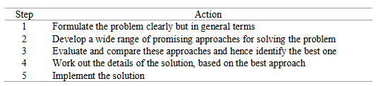With such an approach, would it be useful to assign numbers to each criteria and a weighting factor for each criteria?
Answer: Yes, that is often what's done.
The strategy above will be appropriate for relatively simple, open-ended problems where it is easy to evaluate and compare the alternative options. This may be the case in simple activity planning tasks. If, however, the problem has many, relatively complex, alternative solutions (and this is typically the case in engineering work) then an enormous amount of effort would have to be expended in the third step. A full set of designs and plans would have to be created for each approach. This would be extremely time consuming, costly and inefficient, because it would mean solving the detailed problem many times, once for each option.
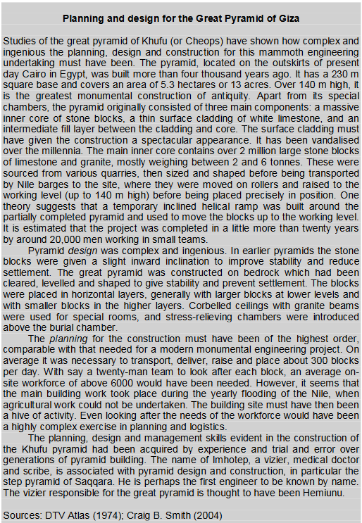The costs in time and effort in the planning and design phases can be reduced enormously if, instead of fully evaluating every option, we use an incremental approach, and start with simple and rough comparisons of the options. On the basis of quite limited information it will usually be possible to identify and eliminate the less competitive options. This first step is not costly because we are using simple, approximate, order-of-magnitude calculations. A second, rather more detailed, evaluation of the remaining options then allows a further cull to be made.
Proceeding step-by-step in this way, we eventually identify a single best option. If not, we will at least have a short list of the most promising options and we can then proceed to a final round of comparisons in which we use the most accurate analyses and calculations. With this methodology we substantially reduce the total amount of effort. Furthermore, the more detailed calculations are made for the more promising options. The steps in this modified methodology are listed below.

As the design and planning work proceeds, it will often become clear that a modification, improvement or correction is needed in one or more of the steps already completed. In Step 4, for example, when a new and unusual, but promising, approach is being evaluated, it might be found that the original problem statement in Step 1 is unnecessarily restrictive. Rather than staying rigorously with the original problem statement it is best to go back and restate the problem in a more encompassing way, as our aim is to obtain the best solution. Likewise, when alternatives are being compared and ranked in Steps 5 and 6, it might become clear that an improved problem statement will allow improvements to be made to some of the approaches.
A methodology for undertaking engineering planning is shown below. It follows closely the problem-solving methodology listed above but typical feedback loops have been added to emphasise the need for iteration.
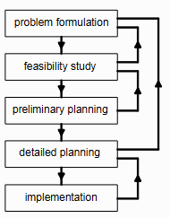The overall aim of the initial problem formulation phase is to clarify and, if possible, quantify the problem.
The feasibility study is the second phase of the process. This term emphasises that there might not be a feasible solution. The desired outcome from this step is of course a short list of acceptable approaches, which will demonstrate feasibility.
What greatly helps a feasibility study?
Answer: A working prototype.
In the third phase of the process, preliminary planning, further rounds of comparisons and evaluations are carried out, in order to identify the best option. The comparisons now require more detailed analysis and evaluation than previously. If one of the alternatives stands out clearly from the others, then the preliminary planning phase can be quickly and easily completed. On the other hand, if the alternatives are closely matched, this phase can become protracted because of the need for increasingly detailed comparisons.
The purpose of the detailed planning phase is to take the best option, when it has been identified, and develop it to work out all of the details needed to undertake the implementation. If much analysis and evaluation work has already gone into identifying the best option, then there will be correspondingly less detailed planning work needed. The end result of this phase is a detailed plan for implementation. However, this might still not be the final plan. Problems can arise during implementation that make it necessary to revisit some of the earlier steps. Indeed, the plan will not be finalised until the project is completed.
The last phase, implementation, may require the construction or manufacture of new components of infrastructure or the implementation of new processes. At first sight, implementation may seem to be a separate part of the project, to be undertaken when the planning and design work has been completed. This is not so. Whatever form the implementation takes, it is almost always necessary to return to and revise some of the earlier planning work.
Which is more costly, to fix a mistake in the problem formulation, or a mistake in implementation?
Answer: problem formulation, because you have to make modifications to all the steps below it.
What percentage of the schedule is spent on Design? Implementation? Testing and Rework?
Answer: 20% design, 40% implementation, 40% testing and rework.
How true are these ratios with the assignments you have done so far?
Answer: 40-20-40, 30-30-40, etc...
When you look at the approach to design so far, which project management methodology is more suitable,
the waterfall model or the
agile model?
Answer: For small projects, waterfall is more suitable. For large projects, agile is more suitable, but
the waterfall model can be used in sub-components of the project.
Within your own company, which departments do you think you have to consult with, while working out the
design and implementation of the project?
Answer: Marketing, manufacturing...
The design process shown below parallels the process of engineering planning shown above, although there are some differences in terminology. The emphasis here is on finding alternative concepts, or design options, rather than on investigating feasibility. Despite this difference in wording, the aim of the second phase is the same in both design and planning: to produce a short list of the best feasible options for solving the problem.
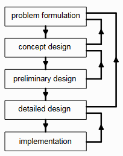The most general, far-reaching and financially most important design decisions are made in the initial stages of the concept design, when new, original and unusual approaches are sought. As the design proceeds towards the detailed phase, the design decisions become more and more specific, and they have less impact on overall costs.
The purpose of the preliminary design phase is to study the short-listed concepts in sufficient detail to allow the best concept to be identified. If it is difficult to choose from several very good concepts, then successive rounds of calculations and comparisons of increasing complexity are needed. These studies may become, in effect, detailed designs. It is not unusual for the preliminary design phase to blend into the detailed design phase, with detailed designs being carried out for several of the very best options.
In the detailed design phase, the aim is to take the best approach, now identified, and generate all the information needed to allow full implementation. If one concept has been clearly identified at an early stage as the best, then a fair amount of additional, detailed work will be required in this phase. On the other hand, the effort needed in the detailed design is correspondingly reduced when the chosen concept has already been investigated in some detail.
Something which is often forgotten or misunderstood is that the vast majority of the work involved in design is finding out what the problem really is - and it's rarely what you think it is. More often than not the client is asking the wrong question. Once you've found out what the problem really is, then things virtually design themselves because you've so comprehensively understood the problem that the solution is self-evident.
The table below contains a checklist of actions that can assist in the problem- formulation phase of engineering planning and design. Some of the actions are information-gathering activities while others are aimed at formulating and, to the extent possible at this stage, quantifying the problem.
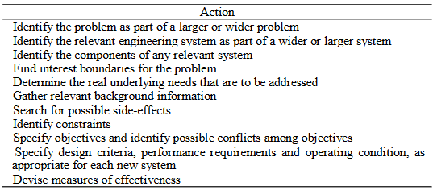An engineering project can begin as a response to perceived needs in the community, and the objectives may be initially poorly defined. The problem as stated may be too vague; alternatively, the problem may be stated in over-precise terms which imply an "obvious" solution. In the latter case, the implied solution will rarely be the only possible one, and may not be the best one. It is therefore important to begin the problem formulation phase by trying to identify the problem as part of a wider or larger problem.
A remote village in South America was identified as one requiring a well. The villagers had to walk for
at least half an hour to a nearby river and bring water back to the village. A social worker therefore
initiated the construction of a well for the villagers. The villagers did not use the well. Why?
Answer: It turns out these villagers met members of other villages at the river. The trip to the
river was not just for water. It provided a social function.
A remote village in South America was having a mild problem with famine. A social worker received funds
to aid to assist in the resolution of this problem. Instead of buying more seed and better farm equipment,
the social worker decided to let the villagers decide how to overcome this problem. They took the funds and
cleared out a field, put two goal posts at either side, and had soccer games instead. Do you think this
worked in alleviating the food problem?
Answer: Actually it did. The leaders of the village noted the low morale of the villagers and figured
weekly soccer games would go far to improving their social cohesion. As a natural result, they worked more
effectively in the fields during the week and food production improved.
To assist in identifying the problem as part of a wider problem, it can be useful to identify the relevant engineering system as a component of a larger or wider system.
How far should the process of problem broadening be taken? At some stage the problem broadening argument breaks down. How do we recognise this stage? The questions cease to be relevant when they are so broad that new issues will barely influence the problem statement. This occurs when the expanded system is so large that the original problem (in this case, the need for a bridge, or some alternative) ceases to be relevant. When this happens, we have clearly gone too far. The limit, where the problem has been widened to the extent that the original problem is of marginal relevance, is referred to as the interest boundary for the problem. The relevant solution options will be found within this boundary.
The construction of a large bridge in a small country can become an international issue. An example was the K-B Bridge in Palau, a small island nation in the Western Pacific, somewhat less than a thousand kilometres west of the Philippines. The bridge was constructed in the 1970s with aid money from the United States when Palau was its protectorate. At the time, the bridge was the largest prestressed concrete box-girder cantilever arch construction in the world, linking the two main islands of Korror and Babeldaob. It served a crucial purpose for the whole population of Palau because essential services, including the airport and power generation equipment, were located on one island while most of the population lived on the other. The bridge collapsed suddenly and apparently without warning in July 1996, shortly after it had undergone extensive refurbishment. Life in Palau was severely disrupted, even though a ferry connection was established between the islands. The construction of a new bridge was clearly beyond the resources of Palau and had to wait until it could be undertaken with international aid. The interest boundary in this case extended well beyond national boundaries.
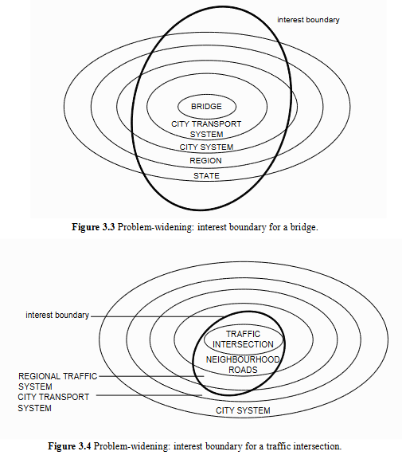In summary, the problem-broadening process should be halted when a further widening of the boundary has only a marginal impact on the original problem statement. The interest boundary can be identified in this way.
The real needs that initiate an engineering project are not always those that are initially perceived. The process of problem widening and the identification of the engineering system as a component in a wider system usually lead to a better understanding of the real needs. In situations where the size and scope and influence of a project are limited, it may be much easier to identify the relevant underlying needs. The attempt to identify underlying needs sometimes moves attention away from purely technical problems towards social issues and political problems, especially when the proposed work is large in magnitude and costly. This is almost inevitable if large sums of public money are to be spent. As the problem-widening and system-widening processes are undertaken, the questions acquire an increasingly political and social flavour and require community input.
When work commences on a new project there is usually a lack of relevant background information. This has to be gathered as early as possible, and before the problem formulation phase is completed. The required information may be scientific and technological, but it may also be non-technical and sociological, legal or political in nature. The data-gathering exercise may require consultation with the community, the use of libraries, the internet, textbooks, and databases.
Each engineering project is designed to bring about some change in the world in which we live. Although the intention is to improve the infrastructure and thereby satisfy some community and individual needs, it is inevitable that there will be side effects. These may be obvious and desirable, but also hidden and undesirable. They may only become evident after a considerable period of time, when the project has been completed and is in operation. In the case of a large-scale project there will usually be a wide range of side effects, some beneficial and some detrimental.
The identification of side effects should begin as early as possible during problem formulation but should continue into the evaluation stages because some side effects will depend on the chosen solution. It is clearly important that the relevant side effects be identified and allowed for when the costs and effectiveness of each alternative approach is evaluated.
It is important in the problem formulation phase to identify the constraints that apply to the problem. Constraints restrict the possible solutions to a problem, and arise in various ways. They may be technical, legal, economic, social, environmental or political in nature. Monetary cost is a constraint that applies in one way or another to every engineering project. Constraints arise if certain side effects are unacceptable or undesirable, such as excessive atmospheric pollution. Technological limitations create other constraints. Legally enforceable industry standards are often the means by which constraints arise in engineering design. Design constraints may be introduced for the different components that make up a system so that they fit together and work in harmony with each other. Constraints can sometimes be quantified as physical limits or as minimum performance requirements which must be achieved.
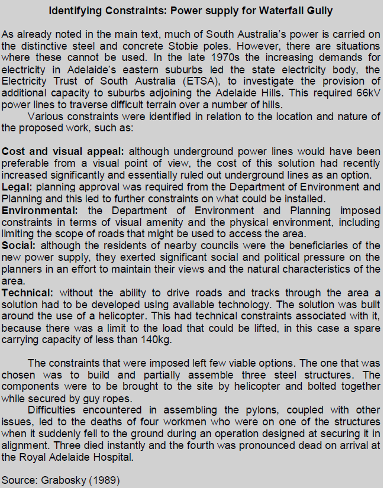It is important to have a clear and unambiguous statement of the goals and objectives of any engineering project. This is, in effect, a statement of the problem, and of what is to be achieved. While it is important to clarify the initial problem statement, it can be advantageous not to finalise it until at least some of the background information has been collected. In particular the process of identifying relevant systems as components of larger systems and identifying the problem as part of a larger problem can assist in identifying the objectives.
Furthermore, engineering projects usually do not have just one, but rather a number of different objectives, and some objectives are very likely to conflict with others. The twin requirements of maximum performance and minimum cost are always going to be in conflict. It is always necessary to identify potential conflicts among the objectives.
The goals and objectives of a project are expanded, clarified and quantified through the use of design criteria. Performance requirements and operating conditions are used jointly to specify how the system that is to be created must perform. These are used both in the detailed phases of planning and design, and in the preliminary phases to evaluate and rank alternative approaches and concepts.
Clear and unambiguous statements of goals, objectives, design criteria and performance requirements are particularly important should the completed project or system not reach expectations, with resulting legal dispute. Safety and reliability are further performance requirements which require very careful consideration
The goals and objectives of a project are expanded, clarified and quantified through the measures of effectiveness, which are used in the feasibility study phase of project planning and in the preliminary and the detailed design phases. When a project has more than one objective, one or more measures of effectiveness are needed for each specific objective, and ideally with an overall measure that takes account of the different objectives.
Total cost is often appropriate as the overall measure of effectiveness. This is the case if the various objectives can be stated in terms of equivalent cost. Overall cost is also appropriate if the various objectives can be reformulated as minimum performance requirements, or as constraints that have to be satisfied. Not all situations lend themselves to monetary evaluation. For example, the measures of effectiveness might need to take account of matters such as aesthetics, environmental effects, risk of injury and loss of life.
The various activities occurring within the problem formulation phase may need to be undertaken iteratively. The type of background information that is required becomes progressively clearer after some attempt has been made to identify side effects and constraints and possible approaches. Likewise, some of the constraints and side effects are more easily recognised after some background information has been gathered. It will also be necessary to return to the problem formulation phase as we proceed through the later phases of planning and design.
You have to design an earthquake early warning system. You wish to
base it on the following piece of hardware which acts as a
transducer that
converts seismic activity into an electronic voltage:
Many of these devices will be deployed over a wide area, and will communicate with a data center as
well as any relevant institutions:
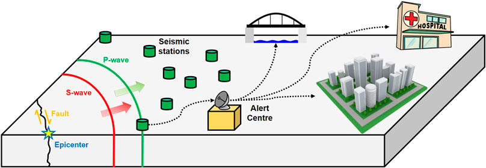
There already exists a product that somewhat performs this function. You can look at it for ideas for
your own system:
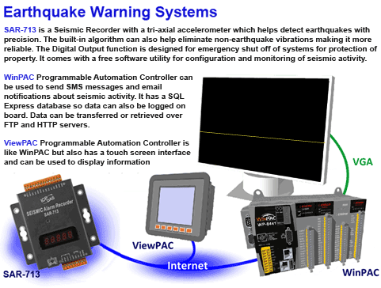
You have to flesh out this problem into relevant component parts. What parts are there?
The purpose of the feasibility study in planning is to show that the project can be carried out successfully. When a short list of promising alternative approaches has been identified, any one could form the basis of a solution. Likewise, the aim of the concept design phase is to establish a short list of promising concepts, each of which may result in a successful engineering design.
It is emphasised that it is best to begin with a wide a range of alternatives. We have seen how each option can be investigated superficially in order to cull nonfeasible and non-competitive candidates. A further study, with a somewhat more detailed analysis of each option, leads to a further culling. The culling continues, using additional information, until there is a short list of feasible, promising options. A list of steps that can be useful in the feasibility study and in concept design is shown in Table 3.4. The steps are discussed below.
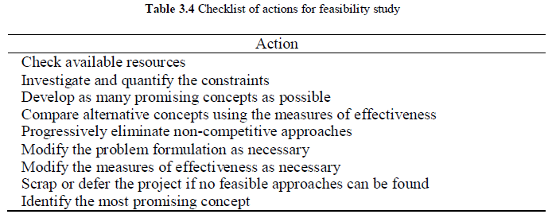Resources are used up in the course of an engineering project and an initial check is needed to ensure that sufficient resources will in fact be available. Resource availability (or non-availability) can determine the viability of particular options, so that this check should be undertaken with all alternative concepts and approaches in mind.
It is necessary to consider human, financial and technical resources, as well as any special materials and machinery that will be needed during implementation. Engineering expertise and scientific knowledge are resources, as are relevant trade and craft skills. Specialised design and analysis skills may be required. Time is a resource because engineering work always has to be completed within a limited time frame.
The technical and other constraints that have been identified in the problem formulation phase have to be investigated and, if possible, quantified. Some constraints are legal-technical, and are quantified in codes and standards and in legislation. In the design of a large city building, constraints on overall height, minimum services for water, sewerage, fire protection, thermal and acoustic insulation and even vertical transport, are imposed through the relevant ordinances and building acts.
This is the key step in the entire processes of engineering planning, design and problem solving. The success of any design or planning work depends on the range, quality and appropriateness of the approaches and options that are generated. As already emphasised, diversity in the alternatives is important. Innovative and creative new approaches, as well as traditional and proven ones, should be included in the initial list of alternatives. It is by no means clear whether an innovative new approach or a well-tried standard approach will eventually prove to be best. Both types need to be investigated.
The preliminary comparison of the options, made using simple calculations and preliminary information, will allow the poorer options to be culled. In further rounds of comparisons, the increased accuracy of the analysis and design calculations lead to more refined comparisons and further culls.
The need for an iterative approach throughout the problem solving process has been emphasised. Modification of the original problem statement may be needed during the feasibility study. As work proceeds and new and unusual approaches are considered and investigated, the understanding of the problem is inevitably improved, so that a better formulation of the problem may be possible. New and unexpected approaches can challenge the validity of the original problem statement, particularly in regard to the measures of effectiveness that are used to compare and evaluate the alternatives.
If none of the options are feasible, perhaps because they do not satisfy constraints relating to time, cost or resources, then the project cannot proceed. It might be best to cancel the project, or to defer it until technical knowledge has improved to the level needed, or until additional resources become available. Another possibility is to look for new, innovative approaches that will make the project feasible. Yet another possibility is to reformulate the problem with different, more modest goals and less severe constraints.
The purpose in this phase is to bring the search for the best option to a positive conclusion and to identify the approach that will lead to the best solution of the problem. Each short-listed option is investigated in turn and in sufficient detail to allow comparisons and rankings to be made, using the measures of effectiveness.
Even at this stage, very accurate comparisons are avoided if at all possible because of the cost implications. On the other hand, if alternatives are eliminated on insufficient grounds, the most appropriate alternative might also be incorrectly eliminated. The step-by-step approach therefore continues until all but one of the alternatives are eliminated.
Although attention is focused on the original options that emerged from the feasibility study, the search for new and better alternatives should not be discontinued. Modifications to existing approaches should be made in the later stages of the process if improvements are achieved. As work proceeds, there can be a build up in expertise which can lead, even at this stage, to further improvements and changes to the original problem statement and to the measures of effectiveness, as well as to new or modified design or planning concepts.
The aim now is to work out the details of the solution that are needed for full implementation. Accurate calculations are needed in the detailed phase. But even here, iteration may become necessary, for example to develop alternative trial details for some components. If adjustments are made to the design details, with the aim of improving performance or decreasing cost, a new analysis might be needed to check whether the improvements have in fact been achieved. Such iterations continue until an effective and economical design or plan has been achieved, that meets all the requirements.
It is in the detailed phase of planning and design that optimisation techniques may be employed. If the behaviour of a component lends itself to theoretical modelling, it should be possible to improve the design by mathematically optimising the parameters that define or characterise the component. The process of optimisation is discussed in some detail in Chapter 13, together with various mathematical optimisation techniques.
At all stages of the detailed design, checks are made that the design constraints are not violated. In some situations overly severe constraints may add disproportionately to the cost or detract from the effectiveness of a solution. Even during the detailed planning and design phase it may be advisable to modify decisions made previously in the problem formulation phase.
In the detailed design of the components of a system, the primary focus should be on the overall operation and cost of the parent system. If the design of a component has a disproportionate effect on overall cost and effectiveness, then modifications may be possible for this component and for the interacting components, so that an improved overall design is achieved. If components are to be manufactured in quantity it may be desirable, depending on the nature and expected cost of the component and the number to be produced, to construct prototypes and test and modify them as an adjunct, or alternative, to the theoretical analyses.
The important final step in the detailed design and planning phase is full documentation, with a permanent record of relevant calculations and analyses and any other investigations that have been used to produce the final plan or design.
Implementation of a plan, a design or a solution to an engineering problem can take many forms, depending on the context of the work. Special engineering fields with their own undergraduate programs and text books are devoted to the different types of implementation, such as construction engineering and manufacturing engineering.
Poor engineering design occurs when inadequate consideration is given to how the design is to be implemented. Constructability is an important criterion that is too often forgotten in the structural design of buildings. An undue focus on optimum design can lead to an elegant design with a minimum use of materials, but exorbitant construction costs.
We have specifically mentioned (if only briefly) the implementation phase here as a reminder of its importance in the overall scheme of planning and design.
To emphasise the fact that alternative sequences may be appropriate in some circumstances, we now discuss briefly a solution-first strategy. Numerous examples can be found in the history of engineering where an important project has not commenced with the identification of a problem but, on the contrary, has started with a potential solution. The task is then to search for an appropriate problem. A good technical idea may arise from some technical or scientific development, or by bringing new, potentially useful knowledge from another field of engineering.
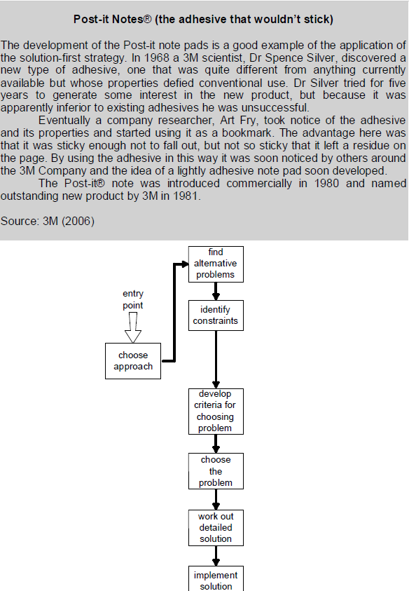Ideas may arise concerning applications of new materials with unusual and useful properties that have been developed in non-engineering fields. Such scenarios lead to the search for possible applications of new ideas.
The solution-first approach shown in the above Figure applies to such situations. A specific solution is the starting point to the procedure. This again emphasises the important point that engineering problem solving is an iterative activity. The entry point to the process is not of prime importance.
In a similar vein, Rogers (1983) has argued that answers often precede questions. He has suggested that while organisations face many problems, they typically possess only limited knowledge of a few innovations that can offer solutions. The chance of identifying an innovation to cope with a specific problem is therefore small. However, by commencing with an innovative solution there is a good chance that it can be matched to some problem facing the organisation. According to Rogers, a strategy for organisations is thus to scan for innovations and to try to line up a promising innovation with relevant problems.
Once the goals and objectives of an engineering project have been established, the expectation is that they will in fact be achieved. However, engineering work inevitably involves some uncertainty and risk, and the possibility always exists that a system or a component will not perform as expected, or indeed that the entire project will not fulfil all of its objectives. When any engineering work is undertaken there is a risk of failure that, although small, is real and unavoidable. However, the levels of risk are controllable to some extent, and can be reduced to very small values that are acceptable to the community.
It is important to note that the term "failure" can mean different things to different people, and within the context of engineering work, it can be used with different meanings in different contexts. From the designer's point of view, a practical and useful engineering approach is to say that failure occurs if the performance of the system does not meet the performance levels that were set for it. These performance levels are carefully chosen during the design process when the minimum performance requirements, the design criteria and the effectiveness measures are identified.
In regard to an engineering project, we can say that failure occurs if the aims and objectives of the project are not substantially achieved. Another quite different kind of engineering failure can occur if unintended, unpredicted and unacceptable side effects arise from the engineering work. Such failures can arise from errors made in the initial investigation stages of the project and from an incomplete and inadequate understanding of the problem.
Irrespective of the way we choose to define failure, there can be many different possible forms, or "modes", of failure to consider. Furthermore, the consequences of the different failure modes can vary enormously.
In any project, the designer must identify the possible modes of failure, evaluate the likely consequences of each mode, and design the system so that there is an acceptably low risk of failure appropriate for each mode. The level of risk that is acceptable will depend on the mode of failure and on the consequences of the failure.
It has been observed that some real world problems are too ill-structured to be dealt with using the standard systems approach. These have been described as wicked problems, as distinct from the docile problems that are amenable to standard approaches (Rittel and Weber, 1993). Wicked problems usually have a strong human dimension, for example when a number of individuals and groups of people are closely involved, both in the problem itself and in defining and finding an acceptable solution.
It has also been suggested that some real world systems do not lend themselves to standard planning and design techniques. A distinction has been drawn between hard systems, for which the procedures described in this book are applicable, and soft systems, which are intractable. Soft systems have been described as highly complex, lacking any clear structure, and possibly containing uncoordinated sub-systems that pursue their own independent goals. Again, such problem systems usually have a human dimension. A soft systems methodology has been developed by Checkland (1984) and his co-workers at the University of Lancaster for dealing with complex, intractable problems that are related to soft systems. It has also been suggested that the self-contained, limited, engineering project may not be the best way to deal with soft systems, and that alternative approaches may be more successful.
Wicked problems have been discussed since the 1970s in regard to social planning and management problems that involve human activity, and more recently in regard to engineering planning, design and management. there is an important human element in most modern engineering work, and community consultation and community input normally lead to acceptable decisions and successful outcomes. On the rare occasions when this is not the case, problems can become wicked, and this is usually because conflicting views and opinions in the community. According to Rittel and Weber (1993), wicked problems cannot be adequately formulated because additional relevant aspects are continually brought up for consideration. They suggest that a solution only occurs when a decision is made that the current trial solution is "good enough". It follows that there is no correct or best solution to a wicked problem, only that alternative solutions can be identified, compared and ranked. They also consider that each wicked problem will be unique, and that each wicked problem will lead to another problem.
Perhaps inevitably, sub-classifications of wicked problems have been proposed: super-wicked problems have been defined as wicked problems which have serious time constraints imposed on them, and which are partly caused by the same people that are dealing with the problem. The term "mess" was introduced by Ackhoff (1974) to describe a set of inter-related problems, or a system of problems. Further information on wicked problems and social messes can be found in the book by Ritchey (2011).
Various strategies have been proposed for dealing with wicked and intractable problems. When a problem is made intractable by the involvement of many paticipants with opposing views, an authorative approach may be possible. A small group of carefully chosen people, including experts, is given the responsibility of coming up with a solution. This approach is time-efficient because it sidesteps the need to deal in detail with the competing views and beliefs of the interested parties; however, it relies on the perspectives and experience of the group of people chosen to deal with the problem. An entirely different approach is to invite solutions from all persons and parties involved with the problem, and then to evaluate them and identify the best one. This is an adversarial approach. It can lead to tensions in the community and mutual distrust. A compromise approach has also been proposed, whereby an attempt is made to include all people who are likely to be affected, and to achieve collaboration using meetings and discussions to clarify the issues among competing interests. This approach will be very time consuming, but can lead to a solution that will be satisfactory to the majority of people, optimal for a few, and unsatisfactory for a minority. Compensation is always an added option for dealing with those significantly disadvantaged by a project.
In important engineering projects it is certainly true that very large numbers of people become involved, in one way or another. When different interested groups hold entrenched views, the project can take on a political dimension so that the engineering problems display the characteristics of wicked problems. Community consultations and negotiations then become very important, but may require additional political input.
Checkland (1984) and his research group at Lancaster University in the United Kingdom, and other researchers, drew a distinction between hard systems and soft systems. Hard systems are relatively well-defined and lend themselves to traditional evaluation and analysis using the procedures presented in this book. In contrast, soft systems are ill defined and possibly indefinable because individuals and groups of people with differing views become involved and do not agree on what constitutes the system and the purpose of the system, nor on the problem that is to be solved. The idea of soft systems was originally developed in regard to problems in management and business, but is applicable to some engineering problems, particularly those which involve opposing views with political and sociological elements.
If engineering problems and systems become intractable, it is usually because there are social, political and business issues to be resolved. But this is not always the case. Developers of large, complex, computer software packages have found that traditional planning and design approaches are inappropriate because of the extreme complexity of the systems being developed, and the length of time needed to create the complete, final plan or program, and then bring it into operation. Multi-purpose, multi-faceted software packages are quite different to, say, a piece of engineering hardware, such as a bridge, which must be brought into use as a complete entity. In contrast, various parts of a large software package can be developed, delivered and put into use long before the complete package has been conceived, let alone created. Some business software packages fall into this category. In their final form, these packages gather enormous amounts of data that fluctuate second by second; they then process, evaluate and analyse the data and so provide rapidly changing advice concerning the financial markets.
An alternative, agile approach to software development has become popular, which allows solutions to evolve progressively and adaptively, with different teams working simultaneously on coding diverse parts of the package. The emphasis is on the early production of working software and the regular delivery of additional components. Close collaboration among the teams of developers is obviously necessary. However, the approach also encourages close contact between the developers and the end users of the package. Furthermore, it allows changes to be made to the overall requirements and function of the package, even at late stages of development. This is an adaptive approach in which, initially, there is no accurate statement of the requirements of the end product. On the contrary, the requirements can change and develop over time and as the detailed work progresses.
This is a radical departure from the traditional methodology in which implementation begins as the detailed planning and design come to an end. Some proponents of the agile approach have emphasised that they are not promoting a different methodology, but rather the principles of a different approach.
The origins of agile thinking in software development can be traced back to the latter decades of the 20th Century, but the approach gained real momentum at the beginning of the new century, when varying views on agile principles (and even including a manifesto) were presented on the internet and published (Highsmith et al 2001). Generally speaking, the agile approach incorporates the following ideas:
In summary, the agile approach emphasises an adaptive, iterative and evolutionary approach to software development, rather than the traditional sequential approach of plan-design-implement.
Not surprisingly, many procedures have been used in implementing the agile approach. We will consider just one, called scrum, which is used to manage the work of a software development team. The aim is quick delivery of software, with an ability to respond rapidly to changes in requirements, to emerging technologies, and to changing user requirements (Schwaber and Beedle, 2002). The word "scrum" comes from the game of rugby football. In the scrum approach, a small team works closely together to produce new software components on a continuing, regular basis. Various roles are allocated to the team members. There is a product owner, who represents the interests of the customer or end user, but is also responsible for communication. The scrum master is the facilitator. A small team, usually of three to nine people, undertakes the development of software increments.
Work is undertaken in short sprints which typically last just several weeks, the aim being to produce useable software by the end of each sprint. A planning meeting is held at the start of the sprint to clarify the aims and the detailed work to be undertaken. A short stand-up meeting is held daily during the sprint and this is called a scrum. Each team member reports on progress made since the previous scrum, on the proposed work for the coming day, and, importantly, on any impediments that have been encountered.
Further detailed information on the scrum method, and on other agile methods, are to be found on the internet. Of course, problems have inevitably been experienced in the introduction of the agile approach, some of which have been documented. One recurring difficulty is accurate budgeting for an agile based project.
It has been suggested that agile methods may be useful outside of software development and in engineering management and business management. The agile approach has been proposed for use in the automated development of engineering products such as computers, motor vehicles and medical devices. A suggested advantage of the agile approach in management is that it is much easier to deal with change and with unexpected occurrences when work is organised in short sprints. It is too early to judge how successful agile methods will prove to be in traditional engineering management applications. New engineering applications of the agile approach will be followed with interest.
A potential problem in applying the agile approach, and one not to be underestimated, is how to achieve a smooth and successful changeover from one mode of operation to another. Even when significant advantages are to be found in employing an agile approach, a too-rapid change in the management approach would cause disruption in any organisation. Careful planning for the changeover would be essential. A useful approach might be a step-by-step "hybrid" alternative, in which some suitable parts of the project are chosen and managed using agile principles. Components of both approaches could in fact be cherry-picked to obtain advantages from both approaches